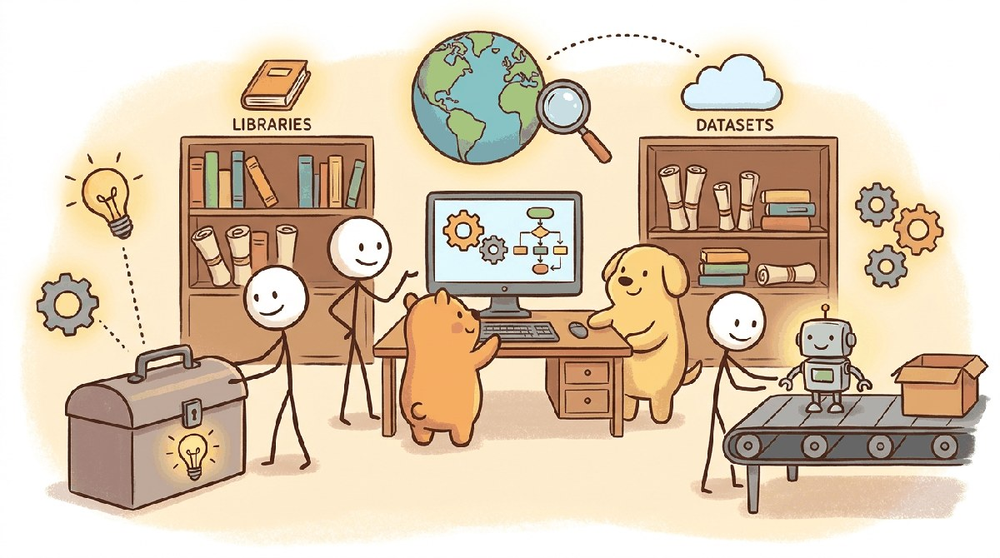

"A product is not a model. A product is the model, the prompt, the eval, the UI, the docs, the on-call rota, and the support inbox."
Pip, Product-Building AI Agent
Chapters 67 through 70 built and shipped products. This chapter is the toolkit: Replit Agent, Cursor, Claude Code, v0, Bolt, Vercel, PostHog, Stripe, and the smaller analytics and ops tools every LLM product team converges on.
Part X covered going from idea to shipped product. This chapter lists the toolkit that 2026 product teams reach for: AI-native code editors (Cursor, Cline, Claude Code, GitHub Copilot), project management (Linear, Notion), design (Figma with AI plugins), and product analytics (Mixpanel, PostHog, Amplitude).
Chapter Overview
Part XIV covered ideation, vibe coding, economics, and shipping. This chapter consolidates the idea-to-product toolkit: the no-code and full-stack-generator platforms that emerged in 2024 and 2025, the web frameworks and deployment platforms that ship LLM apps, the developer-productivity benchmarks (SWE-bench, SWE-Lancer), the model-selection grid pointing back to Chapter 16's tier table, and the product-focused literature that distinguishes Part XIV from the ML-research side of the book.
Idea-to-product tooling stabilized as the AI-native IDE category, the full-stack generator category, and the deployment-platform category converged. Use this chapter as the bookmarkable index for every Part XIV decision.
- Compare full-stack generator platforms with traditional IDEs for MVP creation.
- Choose a web framework and deployment platform for an LLM product.
- Apply developer-productivity benchmarks (SWE-bench, SWE-Lancer) to model and tooling selection.
- Standardize on one model tier across a team to keep eval results comparable.
- Track the product literature, communities, and events that maintain the Part XIV canon.
For the minimum-viable AI-augmented stack:
brew install --cask cursor
npm install -g @anthropic-ai/claude-codeCursor for editing, Claude Code for agentic coding in the terminal, Linear for issues, Figma for design. Most 2026 startups ship with a variant of this stack plus PostHog for analytics.
Sections in This Chapter
Prerequisites
- Ideation and prototyping from Chapters 67 and 68
- Shipping from Chapter 70
- Familiarity with one product stack (Vercel, AWS, GCP, Azure)
- 71.1 Platforms A new tier of platforms emerged in 2024-25 that operate above the editor level: you describe an app, the platform generates the full stack.
- 71.2 Libraries & Frameworks Part X's libraries focus on the application-development side: web frameworks, deployment, CI, and the AI-coding-tool integrations.
- 71.3 Datasets & Benchmarks Part X's measurement story is developer-productivity benchmarks (SWE-bench, SWE-Lancer), event analytics, and revenue funnels rather than traditional ML datasets.
- 71.4 Models For model selection, see Chapter 16's tier table; standardize on one tier across the team to keep eval results comparable.
- 71.5 External Reading & Communities Part X's literature is product, not ML.
What Comes Next
Part XI surveys industries: legal, finance, healthcare, education, cyber, code, and the rest. Chapter 70 closes Part XI with the per-vertical vendor map. Continue to Chapter 72: LLMs in Legal Practice.